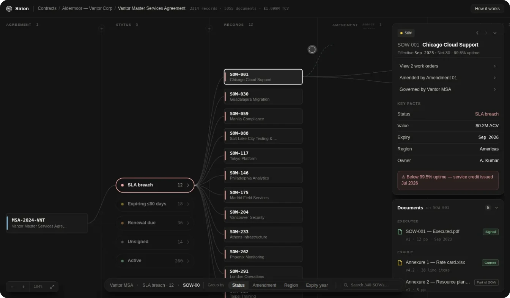

Contract Relationships
Contract systems · Sirion · 2025–26
A folder tells you where a document sits. Not what it changes.
A legal team asks “which amendment applies to this SOW?” dozens of times a week. Answering took half an hour of reconstruction: open the folder, read the file names, check the notes, and hope nobody had renamed anything.
It was never a search problem
I tried what search offers: filters, OCR, a better index. None of it worked.
Users weren’t searching. They were reconstructing meaning. A search result hands you a document. What they needed was a sentence: this amendment, from this date, governs this SOW, and supersedes the one before it.
The argument I had to win
The agreed direction was to improve the folder hierarchy: faster, safer, shippable in weeks, and defensible because the whole category works that way. It was already in the product, and customers were asking for it by name.
I argued the hierarchy was the problem. An amendment can govern several agreements at once; a record can inherit from more than one instrument. Contract relationships are many to many. A tree cannot express them.
This was not a preference between two layouts. A folder tree can only ever answer where a file is stored, so every feature built above it inherits that limit.
Why a design argument was an AI argument
A wrong model doesn’t just inconvenience a user. It makes the AI answer with the superseded clause in the same confident tone it uses for the right one, because nothing in the structure tells it which one governs.
What a system can represent sets the ceiling on what any model built over it can understand. That is now the argument I make before anyone opens a design tool.
What I designed
Navigation and meaning became two different things. A record carries explicit relationships — governed by, amended by, applies to — and the interface reads them back in words: which agreement governs this one, which amendment currently applies, what it changed, and what it superseded.
Open a statement of work and the panel answers the question the team was asking, rather than showing you the shelf the file was on.
And it had to survive real volume
A relationship view is easy to draw for a family of six. Real families aren’t six. I built it as a working prototype and ran it at 340 statements of work.
The radial layout shrank to 12% to fit and left zero legible labels. I replaced it with branching columns grouped by status rather than defend it, and settled the debate with the measurement instead of an opinion.
What transfers
Any system where AI reasons over stored records. If the storage model is wrong, the AI is confidently wrong. Fix the model before the interface.
My role: framing the problem, prototyping the alternatives, making the argument · Shared decisions with designers, product managers and engineers · Approved and prioritised for build; not in production, so there are no post-launch numbers here